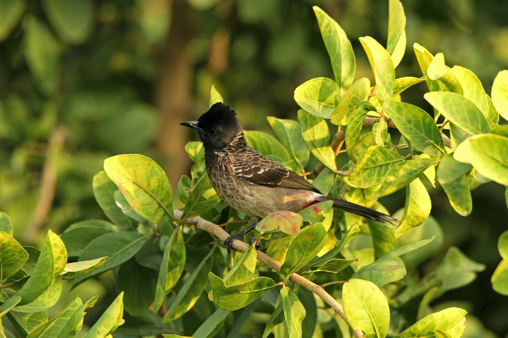

The Red-Vented Bulbul is a familiar and adaptable songbird with a black head and crest, brown body, white rump patch, and distinctive red vent. It occurs in almost every type of semi-open habitat, including gardens, farmland, scrub, parks, and cities. It feeds on fruits, berries, nectar, insects, and other foods and is often seen moving actively through bushes and trees.